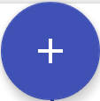
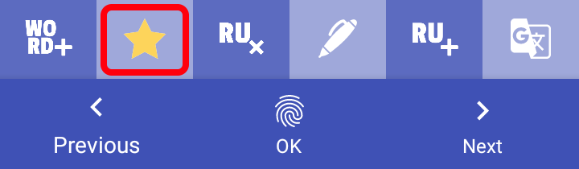
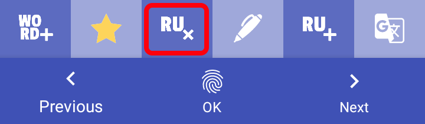
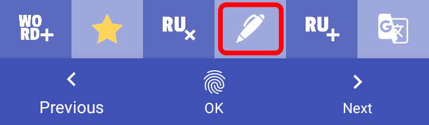

Приложение подойдет тем, кто учит английский язык.
Приложение позволяет разбирать английский текст по предложениям, что позволит запомнить нужные фразы и сохранить
незнакомые слова и выучить их. Предусмотрены тренировки для запоминания предложений и слов.
Для корректной работы необходимо установить Google Translator и Синтезатор речи Google
Чтобы добавить новый урок, на главном экране нажми
В окне создания урока заполни поле имя, выбери картинку для урока и вставь текст в поле "Текст урока". Если необходимо удалить определенные повторяющиеся фразы или слова из текста, введи это в поле "Текст для удаления", после чего нажми Find and delete. Текст очистится от ненужных слов или фраз.
Нажми кнопку "сохранить" в верхнем правом углу
Выбери урок или создай новый
После того, как ты выбрал урок, ты можешь начать свою тренировку.

В этом режиме ты просматриваешь текст урока.
В этом режиме ты просматриваешь особо интересные и важные предложения, которые тебе полезны.
Добавить предложения в список избранного можно в режиме "СПИСОК ПРЕДЛОЖЕНИЙ", "ПРЕДЛОЖЕНИЯ ПО ОЧЕРЕДИ".

В этом режиме ты просматриваешь свой текст, разделенный по предложениям.
Здесь можешь удалить ненужные предложения(долгое нажатие по предложению), редактировать предложения, добавить перевод,
добавить предложения в список избранного, итд.
В этом режиме ты просматриваешь свой текст, разделенный по предложениям.
Переключаться по предложениям
получится путем нажатия на правую или левую сторону экрана.
Также доступна тренировка: Нажми OK => нажми на верхнюю чентральную зону экрана. Слова из предложения
появляются один за другим, по очереди.
Также ты можешь:
- добавлять слова и словосочетания в словарь
- добавить предложения в избранное иил удалить из избранного
- удалить русский перевод предложения
- редактировать предложения
- вставить русский перевод
!!! ТЕКСТ КОПИРУЕТСЯ ИЗ БУФЕРА ОБМЕНА. В Google Translator необходимо скопировать русский перевод